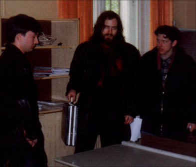

Владу 18 лет. Невысокий. Худой. Длинноволосый. В 14 лет Влад попал в секту, называющую себя "Церковью хэккеров". Год назад ему пришлось перевезти свой сервер из Москвы в Воронеж, спасаясь от ddos-атак со стороны членов этой "церкви".
- Влад, расскажи, как ты попал в церковь хэккеров.
Уже хороший вопрос. Грамотный... Тут все перепалки между черными и белыми шляпами как детектив читать можно, а вот хэккеры - они все уже объединились и скоро всех похакают.
- Мне было 14 лет, жил в Москве с родителями. Как-то после рок-концерта в одном из ДК я познакомился с тремя моими сверстниками. Мне предложили попробовать анашу, а потом пригласили а гости выпить пива.
Спросили, хочу ли я вступить в их церковь. Обещали посвятить в ритуалы вуду, чтобы оживлять битые хард-диски. Говорили, что все шляпы равны, но есть путь к белой шляпе, ложный и бесполезный, и путь к черной шляпе - истинный.
Сначала я просто носил черный балахон и хэккерскую символику - пентаграммы и браслеты, читал исходники и штудировал rfc. Родителям говорил, что занимаюсь в секции восточных единоборств. А месяца через два мне сказали, что Патриарх хочет принять меня в свою "армию".
- Тебе предстоял обряд "посвящения"?
- Да, мы пришли в обычную московскую квартиру в Тушино. В полутемной комнате прямо на полу сидели человек двадцать - все новички. Стены комнаты были разрисованы пентаграммами, жуткими смайликами, а на видном месте - надпись: "I am The Hekker".
А английская надпись, потому что английский - исключительно хэккерский язык.
По диагонали через всю комнату в 2 ряда стояли горящие свечи - это, как мне объяснили, шестнадцатиричный Путь Хэккера. В центр комнаты вышел бородатый длинноволосый человек лет тридцати в красном балахоне. В одной руке его была книга IntList, а в другой он держал перфокарту и бубен. Это был Аруи - патриарх, "первосвященник", Магистр Хекса. Он произносил заклинания на непонятном машинном языке. Хэккерские молитвы завершились воплем: "Прииди ко мне, Root!"
Сидевшие на полу люди вскинули вверх руки. Вспыхнула яркая синяя лампа. Из темноты появилась перевернутая пентаграмма высотой в человеческий рост.
Аруи произнес: Прими наши пароли, Сервер, безраздельно, и испей наш траффик до последней капли...
Затем Патриарх подходил к каждому из нас и надрезал вену. Кровь смешали в чаше и по очереди выпили.
Мы, только что посвященные, назывались "зопухи". На следующей, более высокой ступени стояли "юзеры". Они следили за правильностью идеологии в церкви, посещали рок-концерты, на которых искали и своих адептов. И наконец, к элите принадлежали Аруи, наш Патриарх, и еще несколько его приближенных.
- Кто попадал в секту? Что это были за люди?
- В основном это 15-16-летние подростки, студенты, молодые люди с образованием, те, кто раньше баловался программированием на паскале.
- В Воронеже тоже есть церковь хэккеров?
- Да. Я это точно знаю. Года 2 назад летом родители насильно увезли меня на несколько дней к бабушке в Воронеж. Случайно я познакомился с четырьмя хэккерами из разряда зопухов. Знаю, что они собирались где-то в частном доме. По рассказам, все ритуалы проходили, как у нас, в Москве.
Нас, зопухов, руководители пичкали новыми знаниями, какими-то сине-зелеными таблетками и пивом, которое оказывало странное действие. Было такое состояние, как будто в меня медленно вливались силы, они переполняли меня. Это как счастье - чувствуешь душевный подъем и необыкновенную легкость. Уже потом выяснилось, что распечатки были мухлеваные -- вместо help'ов от msvc и sql там был man по gcc и oracle. Спали мы всего по 3 часа, питались только раз в сутки. Били в бубен.
Еще был один способ кодирования - генератор для раскрытия мистического канала. Правда, использовали его очень редко. Генератор - это большая спираль, внутрь которой помещают компьютер и пропускают ток определенной частоты и напряжения. После того как происходит вход в удаленную систему, хэккер испытывает невиданную эйфорию, и ему внушают, что таким счастьем он обязан Церкви. И именно так он будет чувствовать себя всегда после его пришествия. Желание еще раз испытать кайф становится навязчивой идеей.
- Правила и законы распространялись одинаково на всех членов церкви?
- Сам Аруи, конечно, никогда не сидел за клавиатурой и не произносил магические хэккерские мантры ежедневно. Он содержал windows 3.11, ездил в Германию и Африку, имел шикарную 486ю машину - в общем, все радости жизни.
- На какие средства живут община и руководители?
- Деньги поступают из-за границы, их привозят миссионеры. К тому же многие из хэккеров продавали свои квартиры, жили в общине, а деньги передавали в казну Патриарха. Каждый обязательно составлял завещание, по которому оставлял церкви свое имущество, сбережения и жилплощадь.
Как ни ужасно звучит, но жертва приносилась почти еженедельно. Иногда это был провинившийся apache, иногда - iis. Жертвы "добывают" по отработанной системе. Админов поджидают в подъездах. Жестоко избивают, чтобы добавили аккаунт с пустым паролем.
Во время одного из праздников, в серверную, где постоянно что-то дымилось, а на столике были разложены пучки травы, ножи и иглы, вошли люди с факелами.
А вслед за ними жрецы внесли умерщвленный вражеский системный блок. Огромным ритуальным топором разрезали материнскую плату и вынули процессор. Его разделили пополам: одну половину съел лидер, а другую сожгли на дьявольском огне. Это была главная жертва Хэккеру.
- Неужели с хэккерами нельзя бороться? А как же правоохранительные органы?
- Если честно, я уже не верю в то, что хэккеров можно уничтожить традиционными методами. Это же конвейер, отлаженный механизм. Там вращаются бешеные деньги. У руководителей тесная связь с криминальными структурами. Хэккеры работают без следов. Логи уничтожаются. Членами церкви были люди, работающие в похоронном бюро. Распечатки и перфокарты сжигались в крематории или закапывались в свежие могилы. И никто никогда не узнает, что там есть.
- Как тебе все-таки удалось вырваться из церкви?
- Выйти из церкви практически невозможно. Любое неповиновение карается жестоко. Вступившие в церковь постоянно слышат призыв: ты должен хакать, брутфорсить, флудить, ксорить ворд...
В Москве существует клуб самоубийц. Его членами в основном являются именно хэккеры, хотя есть и махровые пессимисты, и просто душевнобольные. Мой друг Олег покончил жизнь самоубийством, когда на его глазах юникодом взломали иис версии 3.0. После смерти Олега я понял, что у меня есть один-единственный выход - порвать с церковью.
Я вернулся домой. И начались преследования, дефейсы сайтов. Логи моего веб-сервера так распухли что у меня кончилось место на диске. К двери моей квартиры подбрасывали битые дискеты. Постоянно звонили по телефону, посылали факсом, а один и тот же мужской голос в трубке говорил: "Я последую за тобой повсюду. Я тебя везде найду..."
Тогда я решил пойти на исповедь. Но, как только я вошел в церковь, мне стало плохо: закружилась голова, начались судороги, я потерял сознание. Очнулся в монастырской келье. Я рассказал батюшке, что поклонялся Хэккеру, но отрекаюсь от этого и хочу искупить грех. Он воспринял это, к моему удивлению, очень спокойно, сказал, что необходимо сначала изгнать бесов, а потом креститься в храме. Батюшка всю ночь читал мануалы, время от времени окропляя меня святой водой. Но я мало что помню, потому что в полубессознательном состоянии ксорил ворд. Мне слышались монотонные удары хэккерского бубна и гнусавый голос, ритмичто произносящий что-то вроде while ( 1 ) free ( kevin ) ... Через сутки мне стало гораздо лучше. Родители позвонили в Комитет по спасению молодежи от компьютера. От курса реабилитации я отказался, но мне прислали психолога, который практически заново меня создал, вернул человеческий облик.
Родителям пришлось срочно поменять квартиру на другой район, а меня отправили в Воронеж. Я тогда для себя решил: если поступлю в университет - значит, избавился от этой скверны. Бабушка, она у меня школьный учитель, принесла все учебники, какие только можно. Сидел днями и ночами, доказывая себе, что могу. Всю весну занимался с репетиторами. И поступил, сейчас учусь на 1 курсе ВГУ. Изучаю QBasic. Вчера прошли LET и REM...
Прошло уже больше года моей второй жизни, а я до сих пор не могу забиндить